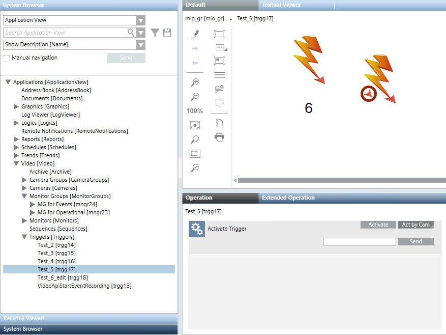

Triggering VMS Actions
From Desigo CC, you can trigger actions on the connected video management system (VMS), for example Milestone / Siveillance, or other third-party VMS that supports this functionality. The triggered actions may include:
- Display multiple cameras on external VMS monitors not managed from within Desigo CC.
- Switch a camera to a video player in the VMS client.
- Arm/Unarm a specific device in the VMS that is not supported in Desigo CC.
- Transfer parameters to a rule/macro in the VMS
- Hand over event information to be used in VMS
The available triggers are those that are configured in the VMS as ‘user defined events’. By default, activation of any trigger, with the exception of VideoApiStartEventRecording, generates a corresponding event in Event List.
NOTE: Event generation is skipped by default for VideoApiStartEventRecording because it is used to initiate video recording in response to an event.
Activate a Trigger from the Contextual Pane
- In System Browser, select Applications > Video > Triggers > [trigger].
- In the Operation tab, the Activate Trigger property provides commands for executing that action in the VMS.
- For a trigger without a parameter, click Activate.
- For a trigger that requires a parameter:
a. Click Act by Cam.
b. Enter one or more camera names in the field.
NOTE: Multiple camera names must be comma separated, for example:src1, src2, src3. If one of the entered camera names is incorrect (a source with that name does not exist) the command fails and is not executed for any camera.
c. Click Send.

Activate a Trigger from a Graphic
In graphics, triggers are represented by a lightning bolt symbol.
- Do one of the following:
- Right-click the trigger symbol to send the Activate or Act by Cam command as you would from the Contextual pane.
- Click the red circled arrow in the symbol to directly Activate the trigger